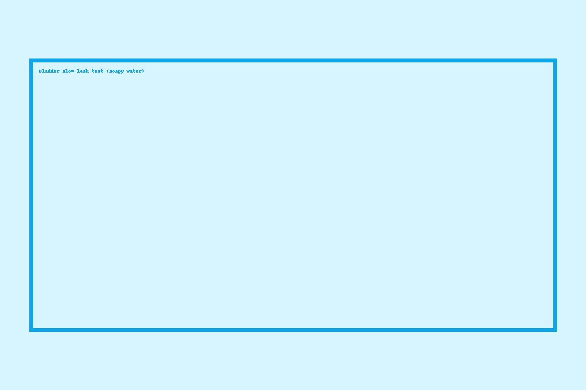

Finding and fixing slow leaks in bladders
Published 2025-06-01 · by KiteRepair.pt

Slow leaks can be frustrating—your kite feels fine at first, then slowly softens. Here’s our simple, reliable workflow to find and fix them.
Diagnosis
- Soapy water test: Inflate and spray diluted soap; watch for fine bubbles along seams and valves.
- Valve base check: Look for micro‑cracks or partial delamination where the valve meets the bladder.
- Seam & pinch points: Inspect LE segment ends, scuff guards, and areas that fold in the bag.
Repairs
- Clean and dry the area thoroughly.
- For pinholes: apply a small, rounded patch with firm pressure.
- For valve issues: re‑glue or replace the valve, then pressure‑test.
If your kite loses pressure over ~30–60 minutes, it’s likely a slow leak. Book a repair and we’ll test it the same day.